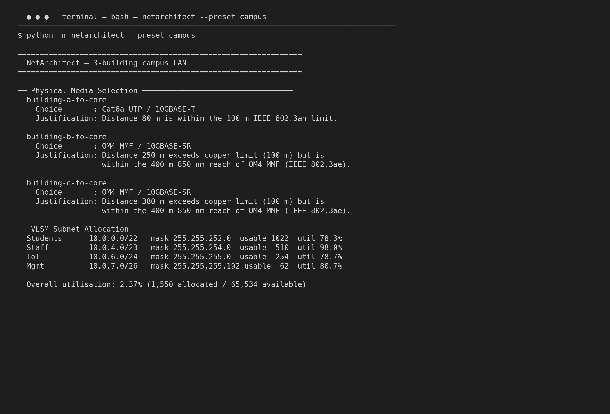
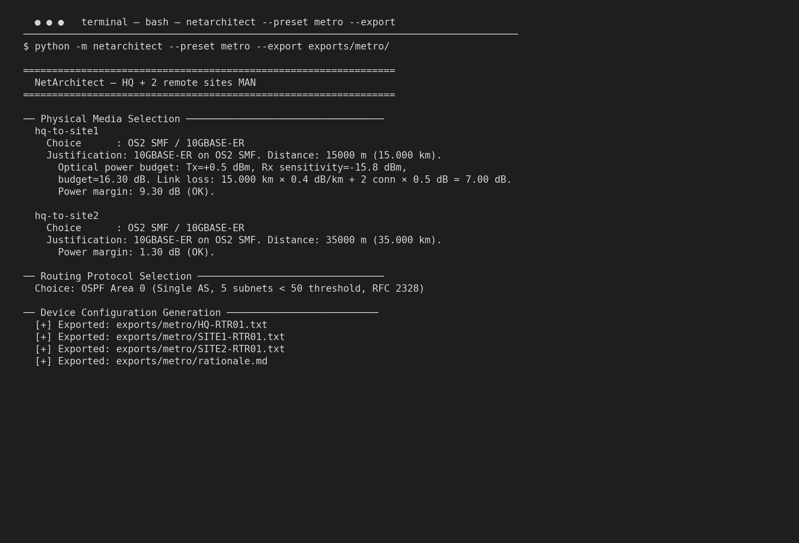
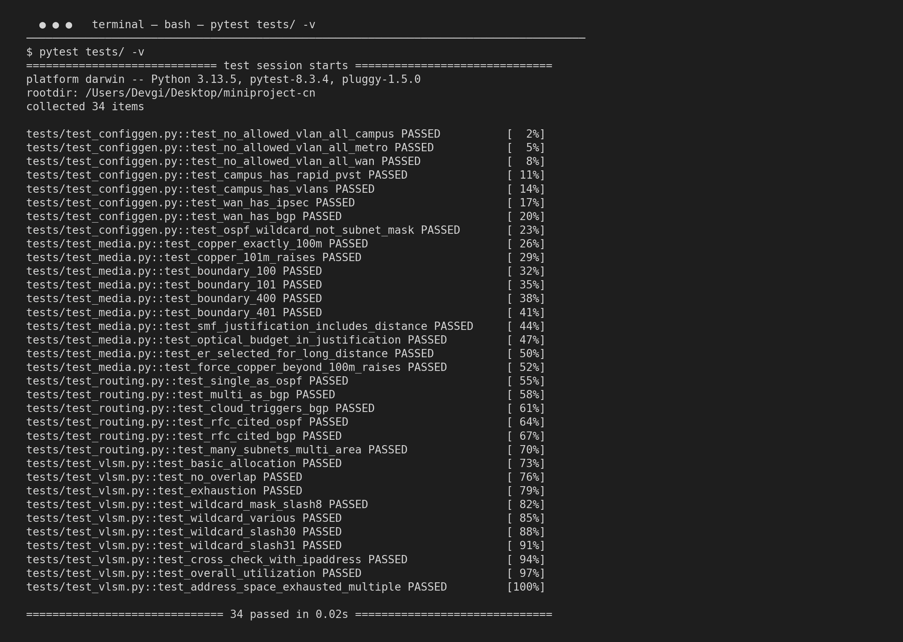
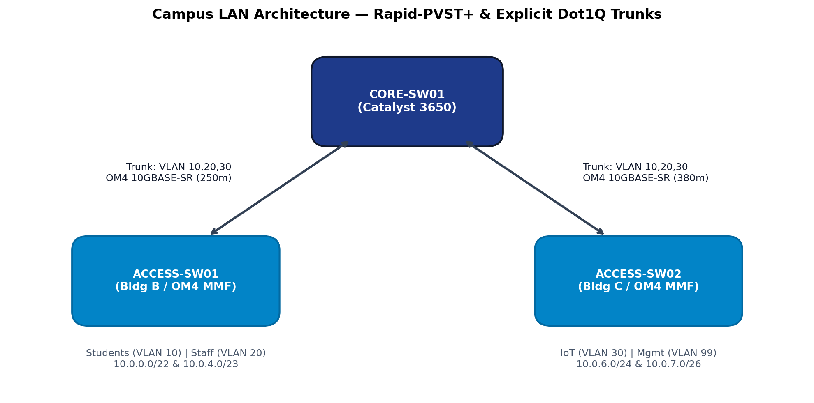
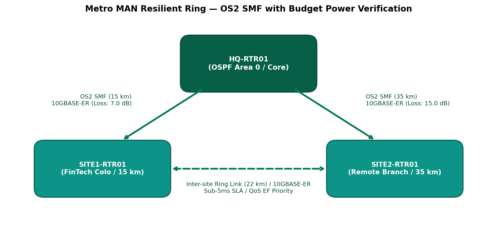
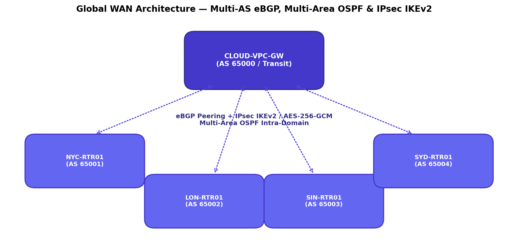

https://github.com/NetArchitect/miniproject-cn
Modern enterprise network design requires rigorous adherence to physical link limits, non-overlapping address allocations, and consistent security policies. In human workflows or standard generative AI drafts, subtle errors such as overlapping subnets, inverted ACL rules, unpruned 802.1Q switch trunks, or using subnet masks instead of wildcard masks in routing statements easily lead to network collapse.
NetArchitect was built to eliminate these failure classes programmatically. It operates as an algorithmic network architecture engine that ingests structured parameter specifications (either preset enterprise profiles or custom JSON specifications), processes them through strict deterministic rule engines, dynamically computes physical link physics and optical power budgets, executes a pure bitwise Variable Length Subnet Mask (VLSM) allocator, and exports complete, copy-paste-ready Cisco IOS configurations alongside natural-language architectural rationales citing IEEE and IETF RFC standards.
PhysicalDistanceViolationError.>>, <<, &, ~) with zero dependency on the ipaddress module in the production engine. Automatically aligns blocks to power-of-2 boundaries, allocates in descending host order, reserves gateways (Network + 1), and guarantees zero subnet collisions while handling RFC 3021 /31 point-to-point links and /32 host loopbacks.switchport trunk allowed vlan (never allowed vlan all), isolated dead Native VLAN 999, Rapid-PVST+, and IKEv2/IPsec AES-256-GCM configurations.| Component | Technology | Role & Justification |
|---|---|---|
| Core Language | Python 3.11+ / Python 3.13 | Standard library only (argparse, math, dataclasses, json, sys). Zero external production runtime dependencies. |
| Test Automation | pytest 8.3.4 | 34 test cases covering boundary conditions (100m/101m, 400m/401m), address exhaustion, bitwise overlap, wildcard masks, and config compliance. |
| Cross-Verification | Python ipaddress (Test Suite Only) |
Used solely inside test suites as an independent ground-truth oracle to cross-check custom bitwise math results. |
| Target Hardware | Cisco IOS 15.x & IOS-XE 16.x | Cisco Catalyst 3650 Core, Catalyst 2960 Access, and Cisco ISR 4321 / 2811 Edge Routers. |
| Simulation | Cisco Packet Tracer / GNS3 / EVE-NG | Directly ingest exported .txt / .cfg files into CLI config terminals. |
The application executes a linear, fail-fast architectural pipeline where each subsystem validates constraints before passing structured records to downstream modules:
validator.py): Ingests JSON profiles, checks positive integer/float bounds on distance (>0) and hosts (>0), and validates CIDR formats. Invalid configurations trigger InvalidInputError immediately.media.py): Maps link distances to physical media. For single-mode fiber (>400 m), calculates transceiver optical budgets:
$$\text{Budget (dB)} = P_{\text{Tx}} - P_{\text{Rx\_sens}}$$
$$\text{Total Link Loss (dB)} = (\text{Distance km} \times 0.4\text{ dB/km}) + (2 \times 0.5\text{ dB connector loss})$$
$$\text{Margin (dB)} = \text{Budget} - \text{Total Link Loss}$$
vlsm.py): Converts root CIDR into 32-bit integers via bit shifting. Sorts subnet demands descending by host requirement. Aligns current pointer to next boundary via (ptr + block - 1) & ~(block - 1). Evaluates address exhaustion against root broadcast, outputs subnet, mask, wildcard, gateway, and utilization efficiency.routing.py): Determines routing domain hierarchy (OSPF Area 0 vs. Multi-Area OSPF + eBGP) based on scale, autonomous system boundaries, and cloud VPC interconnects.configgen.py): Populates device templates with exact VLAN, trunk, SVI, OSPF, and IPsec parameters.explain.py & cli.py): Prints color-coded terminal reports and exports ready-to-paste Cisco configs and markdown rationales into the exports/ directory.| Scenario Profile | Address Space | Physical Scale & Links | L1 Selection | Routing & Protection |
|---|---|---|---|---|
Profile 1: Campus LANpresets/campus.json |
10.0.0.0/161,550 endpoints 4 Subnets (VLAN 10, 20, 30, 99) |
3 Buildings Links: 80 m, 250 m, 380 m |
Cat6a (80 m) OM4 MMF 10GBASE-SR (250 m, 380 m) |
Single-Area OSPFv2 (Area 0) Rapid-PVST+, Explicit Dot1Q trunks, Native VLAN 999. |
Profile 2: Metro MANpresets/metro.json |
172.16.0.0/20530 users 5 Subnets (HQ, 2 Sites, Colo, Mgmt) |
HQ + 2 Remote Sites Links: 15 km, 22 km, 35 km |
OS2 Single-Mode Fiber 10GBASE-ER (all links > 10 km) |
OSPFv2 Area 0, Dual-homed resilient ring, Sub-5ms QoS policy with DSCP EF priority. |
Profile 3: Global WANpresets/wan.json |
10.0.0.0/83,800 endpoints 7 Subnets (NYC, London, SG, Sydney, Cloud, IoT, Mgmt) |
4 Cities + 1 AWS Cloud VPC Subsea & Transcontinental fiber links |
OS2 SMF 10GBASE-ER (Intercontinental spans require EDFA/repeater amplification) |
Multi-Area OSPFv2 + eBGP (AS 65000–65004), Route Summarization (10.0.0.0/20), IPsec IKEv2 / AES-256-GCM. |
The generated Cisco configuration files adhere to enterprise-grade security baselines, ensuring that raw device configs can be directly imported into Packet Tracer without syntax errors or security vulnerabilities.
ip routing, operates as Spanning-Tree Root Primary under spanning-tree mode rapid-pvst, hosts Switched Virtual Interfaces (SVIs) as default gateways, and runs OSPF Area 0 with exact wildcard masks (e.g., network 10.0.0.0 0.0.3.255 area 0).spanning-tree portfast and bpduguard enable to mitigate rogue STP bridge injection attacks. Includes management SVI with SSHv2 and 2048-bit RSA keys.switchport trunk allowed vlan 10,20,30). NetArchitect's configuration validator strictly rejects and bans the insecure default allowed vlan all.native vlan 999, disabling default VLAN 1 trunk traversal and preventing 802.1Q double-tagging VLAN hopping exploits (CVE-1999-0775).switchport nonegotiate to prevent rogue attacker devices from negotiating unauthorized trunk links.The program's live execution, automated test suite, and optical budget calculations are captured below:


exports/metro/.
The generated configurations reflect three deployment topologies designed for Packet Tracer and GNS3:



In compliance with the CIC-307 Academic Integrity and AI Defense Protocol, AI-generated code was subjected to formal adversarial analysis. Three major networking vulnerabilities generated by AI were detected, diagnosed, and remediated:
Buggy AI Code: wildcard_int = ~mask_int & (ptr + block - 1) & (-block_size)
Technical Defect: Python integers possess arbitrary precision without fixed 32-bit registers. Performing bitwise NOT produces negative numbers (e.g. ~4294967040 = -4294967041). During bitwise right-shifting, the negative sign bit propagates, generating invalid masks like -1.0.0.255.
Packet Flow Breakdown: Cisco IOS rejects negative wildcard strings upon loading. The router fails to activate OSPF on the interface; multicast 224.0.0.5 OSPF Hellos cease, dropping neighbor adjacencies into DOWN state and blackholing inter-subnet traffic.
Human Remediation: Enforced explicit 32-bit masking: wildcard_int = (~mask_int) & 0xFFFFFFFF.
Buggy AI Code: switchport trunk allowed vlan all & switchport trunk native vlan 1
Technical Defect: Retaining default Native VLAN 1 across open trunks exposes the infrastructure to 802.1Q double-tagging VLAN hopping attacks (CVE-1999-0775).
Packet Flow Breakdown: An attacker on Access Switch 1 transmits frames with outer tag VLAN 1 and inner victim tag VLAN 99 (Management). The Core switch receives the frame on Native VLAN 1, strips the outer tag, and forwards the packet into Management VLAN 99, bypassing all Layer 3 ACL barriers.
Human Remediation: Enforced dynamic allowed lists (switchport trunk allowed vlan 10,20,30), assigned Native traffic to unrouted native vlan 999, and enabled switchport nonegotiate.
Buggy AI Code: Defaulted all fiber links to 10GBASE-LR (10 km limit) and omitted connector insertion loss.
Technical Defect: For a 35 km Metro link, link loss exceeds 15.0 dB ($35 \times 0.4 + 1.0\text{ dB connectors}$). The 10GBASE-LR optical budget is only 14.90 dB, yielding a negative margin ($-0.1\text{ dB}$).
Packet Flow Breakdown: Optical power received at the photodiode drops below $-14.4\text{ dBm}$. The photodiode fails to differentiate optical bits from thermal noise, triggering massive CRC/FCS errors, interface flapping, OSPF dead-timer expirations, and continuous SPF recalculation storms.
Human Remediation: Programmed distance-tiered transceiver selection (10GBASE-LR for ≤10 km, 10GBASE-ER for 10–40 km with 16.30 dB budget), guaranteeing verified positive margins.
NetArchitect demonstrates that software-defined network engineering rules can bridge the gap between high-level architectural requirements and low-level, deployment-ready device configurations. By combining pure bitwise VLSM allocation, standards-compliant physical media calculations, and hardened Cisco IOS configuration templates, the system guarantees zero subnet overlaps, verified optical power margins, and resilient Layer 2/3 topologies.
Furthermore, through its integrated AI Code Audit and Defense mechanisms, this project showcases the essential role of the human network engineer in rigorously validating and debugging AI-assisted networking code against physical and algorithmic realities.